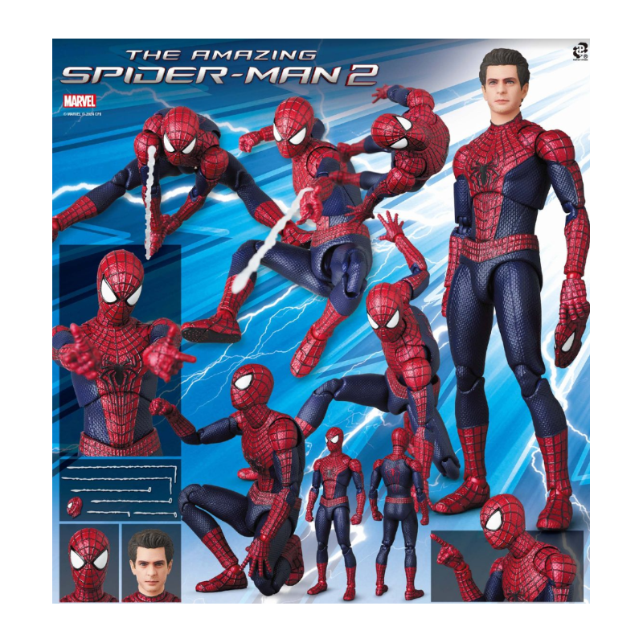

Action figures typically are seen as children's toys, but they can also get pretty pricy, and aren't quite meant for children. While there are cheap toys for children, many adults collect action figures. The main purpose of Action Figures is to have good movement, and overall nice design. These figures are posable and do not come with a base. Almost all action figures are depictions of popular characters from superhero shows/movies and comics, heroes from the Marvel and DC franchises being most popular.
